Locații de nuntă în Iași
- locații în director
- 36
- cu cazare în registrul SITUR
- 7
- medie ponderată Google
- 4,5 / 5
- evaluări Google
- 46.500
Cum alegi o locație în Iași
În Iași poți începe comparația cu Amouria Events (local pentru evenimente), Grădina Publică "Palas" (grădină), Restaurant Casablanca (local pentru evenimente). Aceste proprietăți apar în primele poziții când luăm în calcul împreună nota și numărul de evaluări Google. Salvează adresele care vă interesează pentru a le așeza apoi alături în fișa de comparare a ofertelor.
Pentru partea de afară, avem o descriere a spațiului folosit la evenimente la Amouria Events — Cununie pe ponton · Restaurant Casablanca — Evenimente în grădina de vară și pe terasă. La vizionare, cere schița pentru numărul vostru de persoane, inclusiv locul unde vor sta muzicienii și pe unde intră invitații.
Dacă vin rude de departe, Hotel Restaurant Arnia are o unitate de cazare asociată în registrul SITUR. Înregistrarea pentru Arnia cuprinde 60 de locuri de dormit în 30 de spații de cazare. Întreabă câte camere pot fi păstrate pentru aceeași noapte înainte să trimiți invitaților detaliile de rezervare.
Dacă vrei să vezi două proprietăți în aceeași zi, poți continua de la Kalipso spre Liria Events din Lacul. Punctele lor sunt la 1,7 km în linie dreaptă. Deschide traseul înainte să fixezi ora celei de-a doua vizite, mai ales dacă grupul se deplasează cu autocarul.
Locații pentru vizionare
Ordinea ține cont de nota Google și de numărul evaluărilor. Cum calculăm ordinea
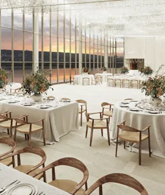
Fotografie a locației · Sursa fotografiei Iași · Local pentru evenimente
Amouria Events
Amouria Events pe lacul Aroneanu, în Iași. Descoperă pontonul pentru cununie, sala de 340 m² și condițiile pentru o nuntă de până la 180 de persoane.
DJ282G, 707023 Iași+40 728 452 307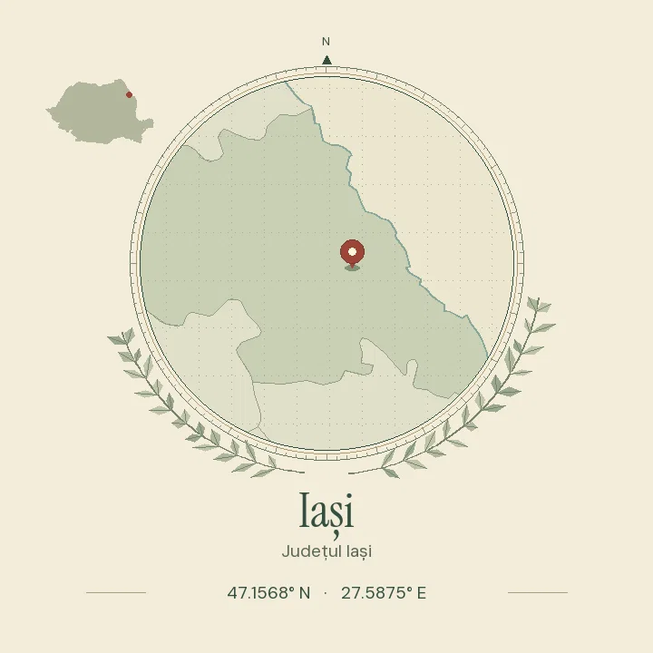
Hartă ilustrată Iași · Grădină
Grădina Publică "Palas"
Parc public în centrul Iașului, cu fântâni, lac și scară monumentală, 11.401 de evaluări. Decor pentru fotografii, nu loc de petrecere.
Strada Palat nr. 3, 700259 Iași+40 232 209 920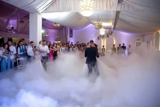
Fotografie a locației · Sursa fotografiei Iași · Local pentru evenimente
Restaurant Casablanca
Restaurant Casablanca, Iași. La Casablanca, o familie amintește de șeful de sală care i-a însoțit pe miri pe durata serii.
Şoseaua Rediu 154, 707410 Iași+40 761 325 950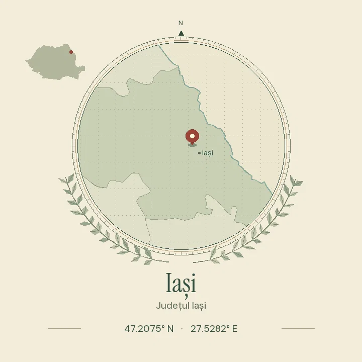
Hartă ilustrată Iași · Local pentru evenimente
Zada
Un cuplu care a ținut nunta la Zada menționează în mod expres firma de catering și preparatul din carne de vită de care își amintesc invitații.
Aleea Mihail Sadoveanu 45, 707405 Iași+40 736 042 592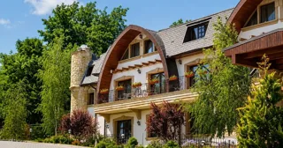
Fotografie a locației · Sursa fotografiei Iași · Hotel
La Castel Hotel Iasi
La Castel Hotel Iasi, Iași. Un client de la La Castel descrie grădina ca pe un loc liniștit pentru o masă de familie sau o ocazie specială.
Aleea Mihail Sadoveanu, 733112 Iași+40 749 225 220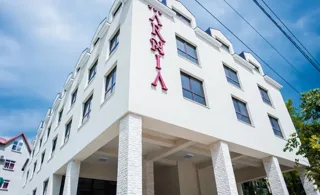
Fotografie a locației · Sursa fotografiei Iași · Hotel
Hotel Restaurant Arnia
Hotel Restaurant Arnia, Iași. Pentru invitații vârstnici, cere locul de oprire cel mai apropiat de intrarea accesibilă.
Șoseaua Arcu nr. 26, 700137 Iași+40 766 343 151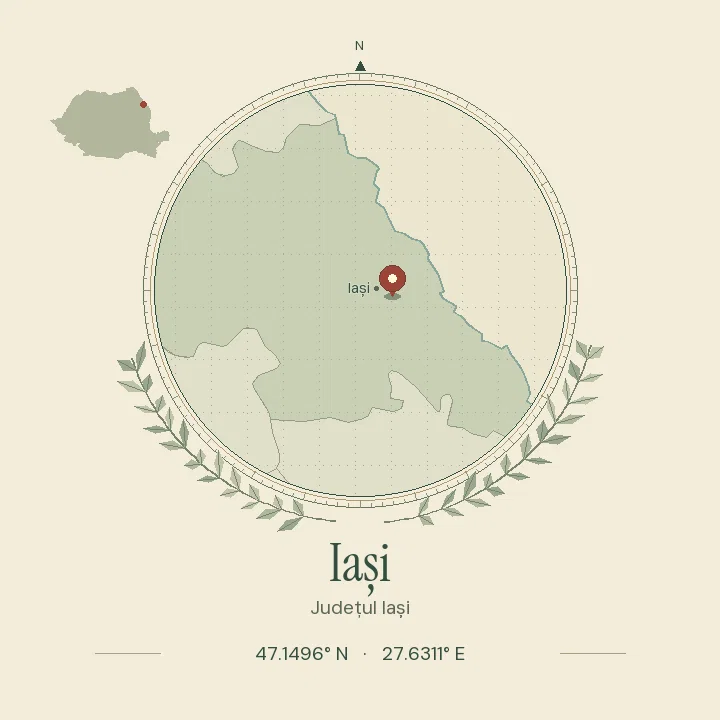
Hartă ilustrată Iași · Local pentru evenimente
Storya Events
Storya Events, Iași. La prima întâlnire, întreabă cine consemnează ultimele modificări și până când poți schimba numărul de porții.
Bulevardul Chimiei 14, 700293 Iași+40 744 870 603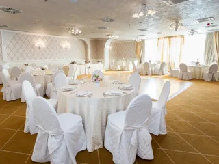
Fotografie a locației · Sursa fotografiei Iași · Sală de nunți
Congress Hall, Sala Mozart/Chopin/Vivaldi
Trei săli la ultimul etaj din Palas Iași, cu parcare subterană și 2.268 de evaluări. Atenție la clauza de preț din contract.
Strada Palas Nr. 7A, 700015 Iași+40 232 209 879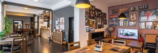
Fotografie a locației · Sursa fotografiei Iași · Bed & Breakfast
All Seasons
Un vizitator la All Seasons a venit exclusiv pentru masă și povestește că ospătarul i-a putut explica preparatele direct, fără să mai cheme bucătarul.
Șoseaua Bucium nr. 165, Iași+40 232 890 848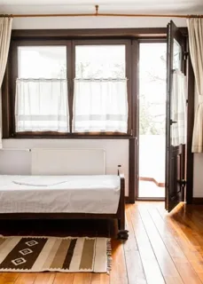
Fotografie a locației · Sursa fotografiei Iași · Hotel
Casa de oaspeți Sfântul Nicolae
Casa de oaspeți Sfântul Nicolae, Iași. Un oaspete a ales această casă pentru apropierea de Mitropolie și își amintește liniștea și micul dejun.
Strada Agatha Bârsescu nr. 9, 700074 Iași+40 749 042 946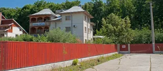
Fotografie a locației · Sursa fotografiei Iași · Cazare în regim hotelier
Pensiunea Cristian
Pensiunea Cristian. Dacă aduceți un grup la Iași și vreți o activitate înaintea cununiei, întrebați ce plimbare s-ar potrivi rudelor care ajung devreme.
Șoseaua Iași - Hlincea, Bulevardul Poitiers 69, 700063 Iași+40 745 456 416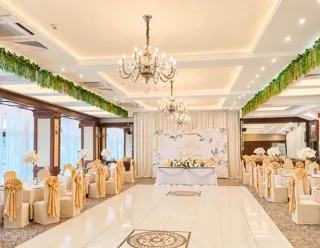
Fotografie a locației · Sursa fotografiei Iași · Sală de nunți
Lord Events Iasi
Lord Events Iasi, Iași. Pachetul operatorului din bulevardul Chimiei oferă cununie religioasă în grădina proprie.
Bd. Chimiei 103, 700450 Iași+40 727 502 050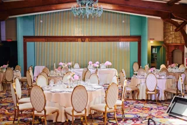
Fotografie a locației · Sursa fotografiei Iași · Local pentru evenimente
La Castel
Mirii care și-au dorit o nuntă restrânsă la Iași spun că s-au hotărât după ce au văzut Sala Venețiană de la La Castel.
Aleea Mihail Sadoveanu 82 A, D-E, 700489 Iași+40 377 703 194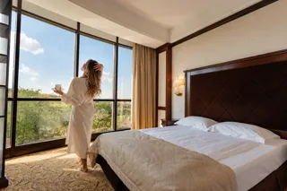
Fotografie a locației · Sursa fotografiei Iași · Hotel
Hotel Bellaria
Hotel Bellaria. Un oaspete de la Bellaria descrie hotelul pe un deal din apropierea marginii Iașiului și o stație de autobuz la câteva minute de mers.
Șoseaua Bucium, 700280 Iași+40 332 403 500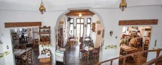
Fotografie a locației · Sursa fotografiei Iași · Restaurant cu specific românesc
La Conac
La Conac. Întrebați gazda în ce perioadă arată asemănător cu imaginile care v-au plăcut și dacă puteți combina câteva portrete afară cu masa în restaurant.
Strada Nicolae Gane nr. 27, 700110 Iași+40 747 069 119Fotografie a locației · Sursa fotografiei Iași · Local pentru evenimente
Bizantiq
Locație de evenimente pe Șoseaua Rediu, Iași: grădină, terasă și parcare proprie. Cupluri mulțumite de coordonare; verifică saloanele.
Şoseaua Rediu nr. 19, 707410 Iași+40 747 022 600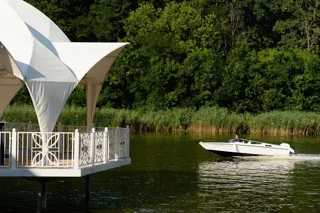
Fotografie a locației · Sursa fotografiei Iași · Local pentru evenimente
Elysium Events
Elysium Events, Iași. Mirii care povestesc despre nunta lor la Elysium laudă împreună sala, mâncarea și servirea.
Zona agrement Ciric, Str. Moara de Vant, 707023 Iași+40 773 896 886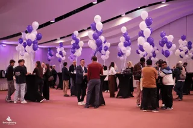
Fotografie a locației · Sursa fotografiei Iași · Restaurant
Centrul de Evenimente AGORA
Centrul de Evenimente AGORA, Iași. Merită să folosiți aceeași distincție dacă aveți o ceremonie în alt loc și sosiți cu întârziere la masă.
Șos. Nicolina 115 bis, 700074 Iași+40 732 004 341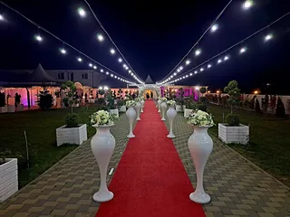
Fotografie a locației · Sursa fotografiei Iasi · Local pentru evenimente
Diamond Ballroom
Atmosfera din jurul piscinei a fost partea apreciată de un vizitator la Diamond Ballroom, care a găsit însă servirea lentă în ziua respectivă.
Comuna Mogoșești, 707335 Iasi+40 758 670 458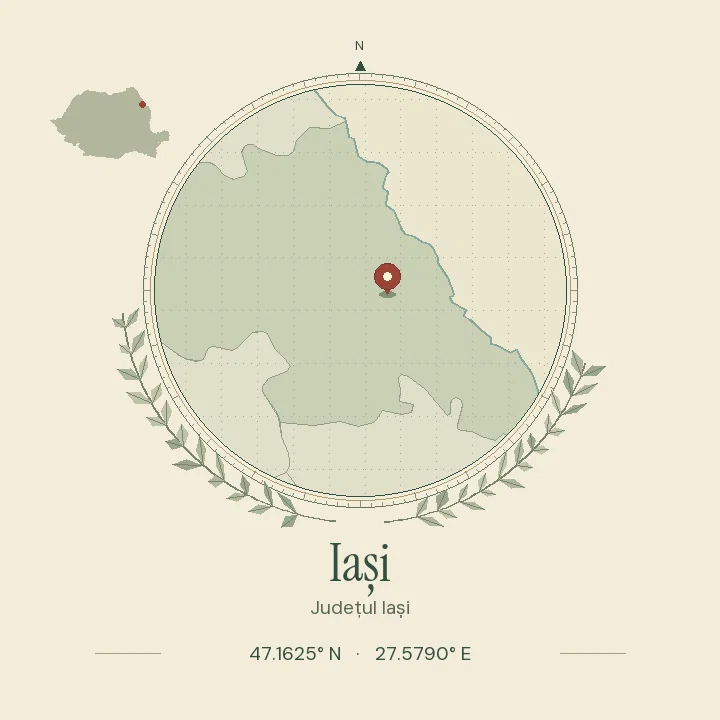
Hartă ilustrată Iași · Bar
Grădina Vert Iași
Grădină urbană cu scenă, cocktailuri și pizza pe Str. Cloșca din Iași. Meniu scurt, loc de joacă pentru copii; ce să întrebați pentru o petrecere.
Str. Cloşca 13, 700259 Iași+40 770 988 507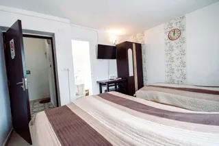
Fotografie a locației · Sursa fotografiei Iași · Cazare în regim hotelier
Casa Mărguța
La Casa Mărguța, un oaspete a remarcat saltelele confortabile, locul de parcare și disponibilitatea proprietarului de a răspunde solicitărilor.
Strada Iancu Bacalu 39, 700028 Iași+40 747 561 859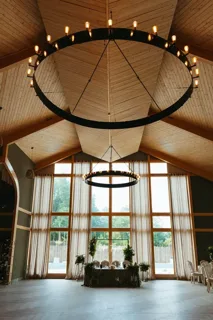
Fotografie a locației · Sursa fotografiei Iași · Local pentru evenimente
Kalipso
Kalipso, Iași. Mirii amintesc porțiile generoase și faptul că șeful de sală a anticipat unele dificultăți de organizare.
Ciric, 700334 Iași+40 747 527 980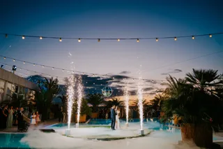
Fotografie a locației · Sursa fotografiei Iași · Sală de nunți
Grand Ballroom by Le GaGa
Sală de nunți cu grădină, restaurant și cazare pe strada Pădurea Surdă din Iași, lăudată pentru apus. Media de 4,4 din 837 de evaluări.
Str. Pădurea Surdă 83, 707311 Iași+40 373 819 297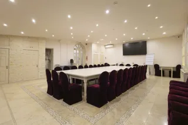
Fotografie a locației · Sursa fotografiei Iași · Hotel
Hotel Eden
Hotel Eden. Un vizitator care s-a cazat la Eden amintește Palatul Culturii, Mitropolia și Teatrul Național printre reperele din apropiere.
Strada Sfântul Sava nr. 1, 700073 Iași+40 735 160 605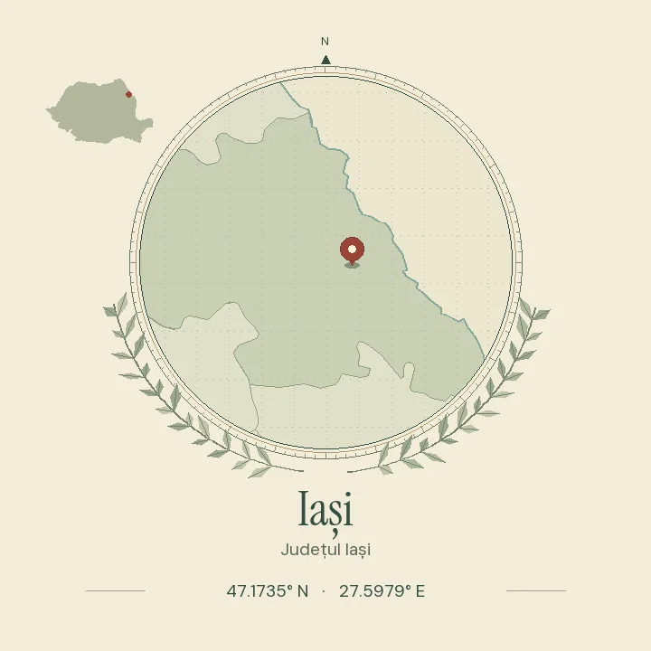
Hartă ilustrată Iași · Local pentru evenimente
Chic events
La Chic Events din Iași, o familie a adus separat mâncarea pentru aniversarea fiicei și spune că această alegere a funcționat bine.
Stradela Moara de Vânt, Iași+40 745 277 894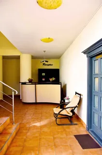
Fotografie a locației · Sursa fotografiei Iași · Bed & Breakfast
Pensiunea Eric
Pensiunea Eric, Iași. Verifică dacă acesta este punctul de primire și unde ar aștepta simultan mai mulți invitați.
Strada Logofăt Tăutu 13, 700456 Iași+40 758 348 342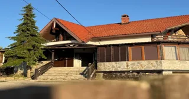
Fotografie a locației · Sursa fotografiei Iași · Pensiune
Pensiunea Taverna Bucium
Pensiunea Taverna Bucium, Iași. Taverna Bucium oferă un reper de verificat pentru camerele pe care le-ai rezerva familiei.
Aleea Teohari Antonescu 4, 700276 Iași+40 749 036 722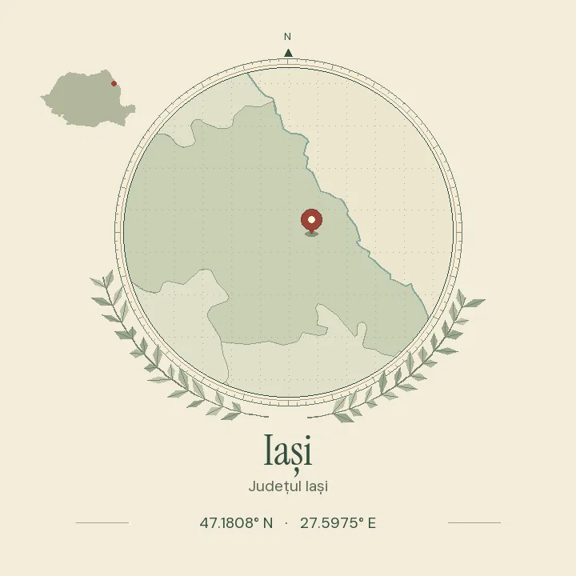
Hartă ilustrată Iași · Bed & Breakfast
SFERA Boutique Rooms
Lacul Ciric, parcarea și minibarul apar în relatarea unui oaspete de la Sfera Boutique Rooms din Iași. Vezi detaliile și localizarea pe hartă.
Str. Moara de Vant nr. 171, 700376 Iași+40 788 254 784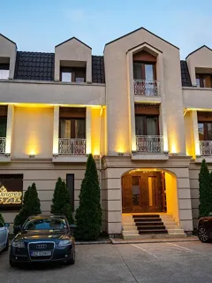
Fotografie a locației · Sursa fotografiei Iași · Bed & Breakfast
Pensiunea Crystal
Pensiunea Crystal, Iași. Camera sa era în corpul de hotel, iar spațiul de servire și terasa erau în cel al pensiunii.
Şoseaua Rediu 66, 707410 Iași+40 232 277 884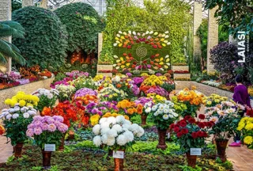
Fotografie a locației · Sursa fotografiei Iași · Hotel
Hotel Dorobanți Iasi
Hotel pe strada Nicoriță din Iași, cu holuri pictate și 1.125 de evaluări. Fără lift: ce să verifici înainte să cazezi aici invitații.
Strada Nicoriță 26, 700397 Iași+40 755 415 415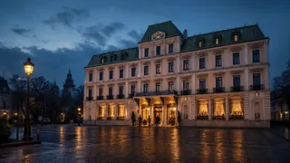
Fotografie a locației · Sursa fotografiei Iași · Hotel
Grand Hotel Traian
Grand Hotel Traian. Dacă ați ales hotelul pentru arhitectură, gândiți distinct fotografiile din piață și programul contractat în restaurant.
Piața Unirii 1, 700056 Iași+40 232 266 666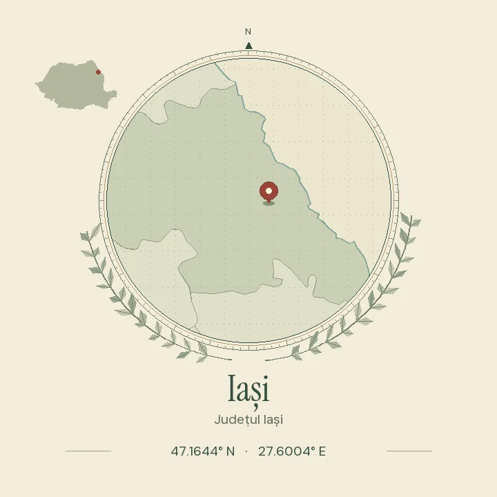
Hartă ilustrată Iași · Bed & Breakfast
Pensiunea Villa Grande 3***
Pensiunea Villa Grande 3***, Iași. Un vizitator de la Villa Grande spune că, în timpul sejurului său, a putut lua aici doar micul dejun.
Strada Călărași 14, 700301 Iași+40 232 220 000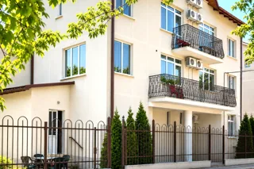
Fotografie a locației · Sursa fotografiei Iași · Bed & Breakfast
Pensiunea Moldotour
Pensiunea Moldotour. Pentru pregătirile miresei, întrebați ce cameră oferă acum lumină naturală și posibilitatea de a trage perdelele când se schimbă ținuta.
Strada Florilor Nr. 17, 700513 Iași+40 744 987 299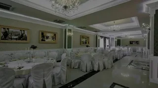
Fotografie a locației · Sursa fotografiei Iași · Local pentru evenimente
Restaurant Moara de Foc
Restaurant Moara de Foc. Este un exemplu de întâlnire de familie la restaurantul din Iași, distinct de rezervarea unei nunți cu program complet.
Șoseaua Moara de Foc 1A, 700536 Iași+40 751 220 925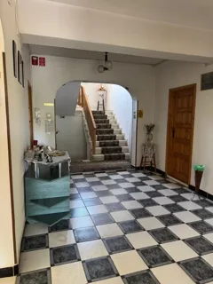
Fotografie a locației · Sursa fotografiei Iași · Bed & Breakfast
Pensiunea Garofita
Pensiunea Garofita. La Garofița, o familie a călătorit la Iași împreună cu cățelul și își amintește camerele aerisite și micul dejun bogat.
Șoseaua Bârnova 101B, 700286 Iași+40 744 587 816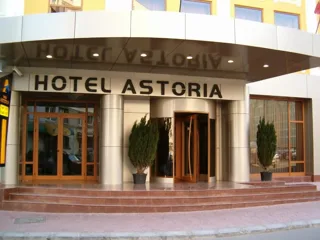
Fotografie a locației · Sursa fotografiei Iași · Hotel
Hotel Astoria
Hotel Astoria, Iași. Pentru invitații care sosesc la Iași cu trenul, drumul către Astoria merită parcurs și cu un bagaj în mână.
Strada Alexandru Lăpușneanu nr. 1, 700057 Iași+40 232 233 888
Întrebări despre locațiile din Iași
Unde pot dormi invitații în Iași?
În registrul de cazare SITUR găsim Hotel Restaurant Arnia (60 de locuri de cazare), Hotel Eden (60 de locuri de cazare), Pensiunea Eric (14 locuri de cazare). Verifică ce camere sunt libere pentru noaptea evenimentului.
Ce spații sunt documentate pentru evenimente în aer liber în Iași?
Amouria Events — Cununie pe ponton. Restaurant Casablanca — Evenimente în grădina de vară și pe terasă. Zada — Petreceri private în grădină.
Ce tarife de meniu au publicat locațiile din Iași?
Hotel Bellaria — Tarife de nuntă · cinci propuneri 2027, 407, 425, 448, 477 sau 525 lei/persoană. Oferta operatorului. Centrul de Evenimente AGORA — Tarif de nuntă · Premium 2027, 470 lei/persoană. Oferta operatorului. Verifică în oferta pentru data voastră dacă intră băuturile, TVA-ul și închirierea spațiului.
Care locație din Iași are cele mai multe evaluări Google?
Grădina Publică "Palas" are 11.401 evaluări în profilul Google folosit la documentare. Evaluările acoperă și alte experiențe la proprietate, inclusiv vizitele fără eveniment.
Unde apare o intrare accesibilă în Iași?
Profilurile Google indică o intrare accesibilă la Amouria Events, Grădina Publică "Palas", Restaurant Casablanca. Pentru o cununie în exterior, cere detalii despre traseul dintre intrare și zona cu scaune.
Ce alte localități pot include într-o vizionare lângă Iași?
Cele mai apropiate adrese comparate pe hartă sunt în Lacul, Valea Adâncă, Horpaz. Găsești mai jos distanțele dintre proprietățile folosite pentru această comparație.
Vizionări în apropiere
- Lacul · 1 locație. Între Kalipso și Liria Events sunt 1,7 km în linie dreaptă.
- Valea Adâncă · 1 locație. Între Centrul de Evenimente AGORA și Restaurant Titanic sunt 1,8 km în linie dreaptă.
- Horpaz · 1 locație. Între Centrul de Evenimente AGORA și Ambio Events sunt 2,1 km în linie dreaptă.